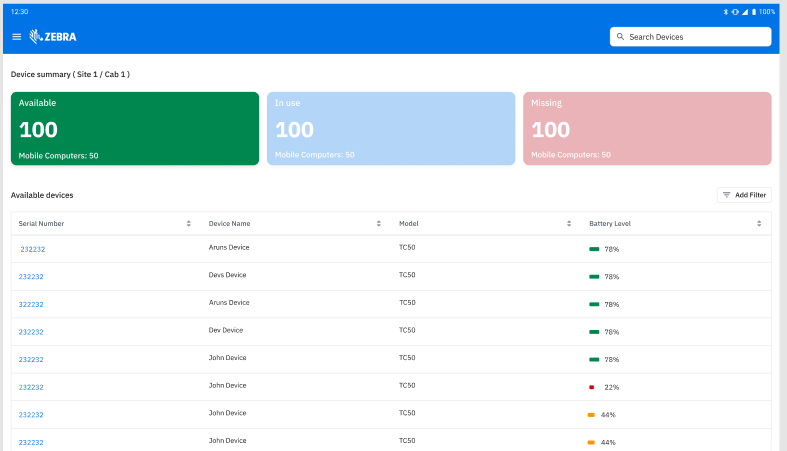
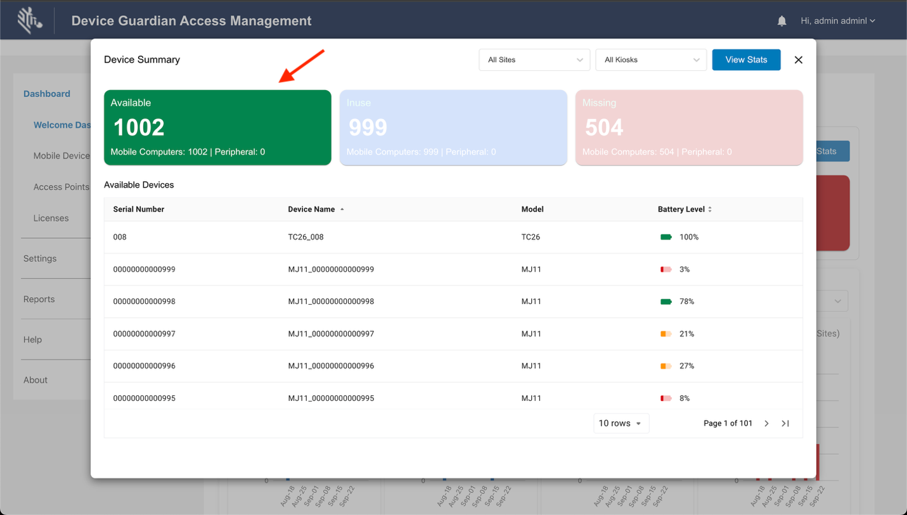
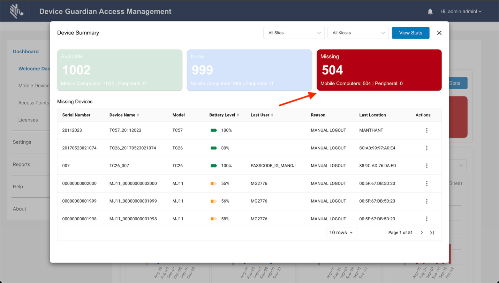

// done
Overview
Device Guardian Access Management (DGAM) enhances device management and access by streamlining operations based on kiosk location. The kiosk display offers immediate visibility of devices within its vicinity, allowing for effortless monitoring of device availability. It ensures accountability through worker-device assignments and ensures that devices are fully charged for the upcoming shift, thereby improving local visibility, boosting workflow efficiencies, and facilitating the swift recovery of missing devices.
The kiosk monitors the status of its registered devices, categorizing them as In Use, Available, or Missing. Within the workflow, when users retrieve a device from the cradle and login, the device is marked as "In Use." When devices are returned to the powered cradle after use, they are classified as "Available." Misplaced devices can be quickly located by identifying the current and previous users and initiating recovery either with Device Guardian or by scanning a barcode at the kiosk. A device is designated as “Missing” if it is neither logged in by a user nor placed on charge, or if recovery efforts are unsuccessful.
As an extension of Device Guardian, DGAM’s features and functionality are built upon the core capabilities of Device Guardian. This section provides guidance on the installation and use specific to DGAM. Any features not covered here are part of Device Guardian and are discussed in the respective Device Guardian sections.
// done
Specifications
Kiosks:
- Zebra recommends to maintain a minimum distance of 6 meters between kiosks.
Mobile Devices:
- Within Kiosk Range (Less then 3 meters) - The device logs out automatically when placed on charge.
- Intermediate Range (Between 3 and 6 meters) - The device may either log out or remain logged in while charging.
- Out-of-range from Kiosk (More than 6 meters) - The device remains logged in when charging.
// done
Installation
Device Guardian Access Management (DGAM) requires the installation of the following components:
- For Both Kiosks and Mobile Devices:
- Device Guardian - Refer to the Device Guardian installation guide for instructions.
- DGAM-specific Licenses - Visit the Licensing guide to obtain these licenses.
- For Mobile Devices only:
- Identity Guardian - Facilitates user authentication for device access. Configure Identity Guardian according to your user authentication strategy.
// done
Permissions
DGAM requires the following permissions to be granted for both kiosks and devices:
- Camera Permission - Needed to scan the registration QR code, essential for registering the device with a kiosk.
- Location Permission - Required to determine the device’s geographical position, crucial for location-based services or GPS-related functionalities.
- Music and Audio Permission - Enables access and control of the device’s audio features, including playing or managing audio within the application, such alarms.
- Notifications Permission - Allows the application to send notifications to the user, ensuring effective communication of important updates or alerts.
- Files and Media Permission - Specific to Android 11, required to read from or write to the device’s storage, allowing access or modification of files and media content while adhering to Android 11’s scoped storage policies.
// done
Setup Guide
After installation, perform the following:
Kiosks:
- Enroll the kiosk to the Device Guardian server.
- Assign the kiosk to a site.
Devices:
// done
Import DataWedge Profile
Zebra's DataWedge application facilitates barcode scanning in DGAM. A specific DataWedge profile must be imported on devices being registered to a kiosk.
Steps to Import DataWedge Profile:
- Download the DataWedge Profile.
- Copy the File to Your Device: Transfer the DataWedge profile to the device’s internal storage.
- Import the Profile into DataWedge: Open the DataWedge app on your device (installed by default).

- From the top-right menu, select Settings.

- Select Import Profile. Browse to the file location from step 2. The profile is imported.

- From the top-right menu, select Settings.
- Verify Import: Return to the main screen of DataWedge to ensure the profile named "DGAM” is listed.

// done
Register Device to Kiosk
Register devices with a designated kiosk to update the kiosk dashboard data and enable device monitoring within the kiosk. This is accomplished by using the device to scan a barcode displayed on the kiosk.
Steps to register a device to the kiosk:
- On the mobile device, open the Device Guardian app.
- Tap the top-right menu and select Register to Kiosk.

- A screen appears allowing you to scan a barcode.

- On the kiosk, tap the top-left menu.

- Select Register / Sync.

- Tap Register Device.

- While on the screen from step 3, use the mobile device to scan either the QR code or barcode, completing the device registration to the specific kiosk.


// done
Unlock Device from Cradle
For cradles equipped with a locking feature, users are required to unlock the device through Identity Guardian before removing it for use. This enhances security and promotes user accountability.
Steps to unlock the device:
- While the device remains in the cradle, tap Scan to Unlock on the Identity Guardian lock screen.

- Enter the passcode when prompted, then tap Unlock.

- The "Unlocking" screen displays, showing a flashing pattern of alternating black and white squares at the top of the display (the black square turns white and white square turns black). This pattern signals the cradle to unlock the device.
 |
 |
- Once unlocked, the "Unlocked" screen appears, indicating that the device can be removed from the cradle. This screen remains visible for 4 seconds:
- If the device is removed within 4 seconds, the home screen is displayed, and the device is ready for use.
- If the device is not removed within 4 seconds, the cradle automatically locks again, and the device logs out. When this occurs, the Identity Guardian lock screen reappears.

// done
Kiosk Dashboard

Kiosk Dashboard
The Kiosk Dashboard provides an interface to monitor and manage devices effectively. It features three prominent cards, each representing different device statuses. Users can tap on these cards to access detailed information for each category. The cards include:
Available - Displays devices that are currently placed on the charging cradle and have no user signed in. These devices are charged and ready for use. The following information is provided:
- Serial Number
- Device Name
- Model
- Battery Level(%)

In Use - Displays devices that have been removed from the charging cradle and authenticated by users via Identity Guardian. These devices are currently in active use. The following information is provided:
- Serial Number
- Device Name
- Model
- Battery Level(%)
- User (the individual currently using the device)
- Location
- Action Menu - Offers the following option:
- Find Device - Generates a barcode that allows a mobile device to search for and locate the missing device. For instructions, see Find Device.

Missing - Lists devices that have been logged out by the user but not yet returned to the kiosk, or are unrecoverable. The following information is provided:
- Serial Number
- Device Name
- Model
- Battery Level(%)
- User (the last user logged in)
- Last Location (where the device was last detected)
- Reason (a note or reason provided when marking the device as missing)
- Action Menu - Offers the following option:
- Find Device - Generates a barcode that allows a mobile device to search for and locate the missing device. For instructions, see Find Device.

Device Details
The Device Details screen displays key information about a device when its serial number is selected within any of the device status screens: Available, In Use, or Missing.
Tapping on the device's serial number opens a dialog box showing relevant details based on the device's status.
Common information across all statuses:
- Serial Number
- Device Name
- Model
- Battery Level (%)
- Connectivity Status
Additional information specific to the device's status are provided in the subsections below.
Available Devices
In the Available Devices screen, the details focus on basic device information and connectivity. Along with the common information, the Returned On date is included, showing the timestamp of when the device was returned to the kiosk.

In Use Devices
In the In Use Devices screen, additional information includes:
- User (current user)
- Location (based on access point connected)
- QR Code and steps to locate the device

Missing Devices
In the Missing Devices screen, further detils are provided to help track the device:
- Last User
- Last Location
- Reason (for being marked missing)
- QR Code and steps to locate the device

Device Usage Reports
Device Usage Reports enable organizations to detect trends and anomalies, assisting optimizing device availability and utilization. The reports provide the number of devices that are in use, missing, or available over various time periods: Yesterday, Last Week, and Last Month.
To access these reports:
- On the kiosk dashboard, tap the menu icon at the top left.

- Tap Reports.

- Select the desired time frame:
- Yesterday - Displays hourly device counts for yesterday, categorized by status:
- Available
- In Use
- Missing

- Last Week - Displays daily device counts for the past week, categorized by status:
- Available
- In Use
- Missing

- Last Month - Displays daily device counts for the last 30 days, categorized by status:
- Available
- In Use
- Missing

- Yesterday - Displays hourly device counts for yesterday, categorized by status:
Find Device
To recover lost or misplaced devices, this process can be initiated through the kiosk. The finding device would scan the QR code of the missing device from the kiosk. This process is applicable to devices categorized under Missing.
Steps to initiate the finding process via the kiosk:
- On the kiosk dashboard, tap Missing to view the relevant devices. Tap the menu icon under the Action column for the desired device and select Find device.

- The QR code is displayed.

- Open Device Guardian on the finding device. Tap on the options menu at the top right and select Register to Kiosk. Although the device will not be registered to the kiosk in this instance, the scan beam activates. Scan the QR code.
- The app screen with the proximity meter appears, providing guidance on how close or far the user is located from the misplaced device. To proceed finding the misplaced device, follow step 3 onwards from the Find Device procedure.

Search
The search bar, visible from the home dashboard screen, provides users with quick and convenient access to search functionality. It allows searching across any value field under any column.

As users type, the search results are dynamically filtered and displayed in real time, enabling fast navigation and easy access to relevant information.

If no interaction occurs within 10 seconds while in the search field, the kiosk automatically returns to the home screen.
About Kiosk
The About Kiosk screen provides information about the device and the status of specific features:
- Kiosk Name - Model name of the kiosk
- Kiosk Serial Number - Serial number of the kiosk
- Kiosk Site - Site where the kiosk is located
- Bluetooth Proximity - Status of Bluetooth Proximity, managed through Manage Sites:
- Enabled
- Disabled
- Return To Different Kiosk - Status of Return To Different Kiosk, managed through Manage Sites:
- Enabled
- Disabled
To access the About Kiosk screen:
- On the kiosk dashboard, tap the menu icon at the top left.
- Tap About Kiosk.

- The About screen is displayed. Aside from displaying information on the kiosk name, serial number, and site, it also displays whether the following options are enabled or disabled:
Web Portal
This section focuses on the web portal areas specific to DGAM. Sections not covered here pertain Device Guardian, which are detailed in Device Guardian configuration and dashboard.
Single Sign On Integration (SSO) (Admin Settings > Single Sign On Integration) is accessible only to administrators and managers. For more information on SSO integration, see Device Guardian's Single Sign-On (SSO).
Welcome Dashboard
The DGAM Welcome Dashboard (Dashboard > Welcome Dashbaord) provides an intuitive interface that displays real-time data at-a-glance.

Welcome Dashboard guide
It features three prominent cards that shows device counts. Click on each card to display the Device Summary for that category:
Available - Lists devices currently on charge with no user logged in. Information provided includes: Serial Number, Device Name, Model, and Battery Level.

In Use - Lists devices with users authenticated via Identity Guardian. Information provided includes: Serial Number, Device Name, Model, Battery Level, User, Location (AP), and Actions menu. To take action on a specific device, tap the menu icon in the Actions column:
- Find Device - Generates a barcode that allows a mobile device to search for and locate the missing device. For instructions, see Find Device.

Missing - Lists devices that have been logged out by the user and have not been returned to the kiosk, or that could not be recovered. Information provided includes: Serial Number, Device Name, Model, Battery Level, Last User, Reason, Last Location (AP), and Actions menu. To take action on a specific device, tap the menu icon in the Actions column:
- Find Device - Generates a barcode that allows a mobile device to search for and locate the missing device. For instructions, see Find Device.

Device Auto Assignment
Device Auto Assignment (located under Settings > Configuration) automatically assigns the mobile device to the nearest charging kiosk within its Bluetooth range, eliminating the need for manual device registration to the kiosk.

One Device Per User
The One Device One User feature ensures that each user is restricted to logging into and using only one device at a time. This functionality enhances security and device management by preventing multiple simultaneous logins across different devices.

Configuration
Enable or disable the One Device Per User feature through the web portal. Navigate to Settings > Configuration to access this setting.
Usage
Login Process:
- When a user attempts to log in, the system checks whether this feature is enabled.
- If enabled and the user is already logged into another device, the system blocks the new login attempt and displays an error message.
Logout Process: Upon logout, the user’s association with their current device is removed, allowing them to log in on another device.
Device Status Changes: If a device is marked as lost or decommissioned, the system automatically removes the user’s association with that device, enabling them to log in on another device without manual intervention.

Kiosk: The About screen in the kiosk indicates whether the One Device One User feature is enabled or disabled.

Kiosk
Kiosk (under Admin Settings > Kiosk) lists all kiosks enrolled with the server, along with their assigned site. The Bulk Upload feature allows for the simultaneous import and assignment of multiple kiosks to their respective sites.

Kiosk guide
To perform a Bulk Upload:
- In the Kiosk screen, tap Bulk Upload and select Download Template.
- Open the downloaded .CSV file and enter the Kiosk Name and Site Name based on the template. Save the changes.
- Tap Bulk Upload and select Upload CSV.
- Drag and drop or select the file for upload, then click Import.

Kiosk Device
Kiosk Device (under Admin Settings > Kiosk Device) displays all devices registered with a kiosk, displaying various device data, including their Status:
- Available - Devices placed on the charging cradle without any user signed in, ready for use.
- In Use - Devices have been removed from the cradle and authenticated by users via Identity Guardian, indicating active use.
- Missing - Devices that have been logged out by the user and have not been returned to the kiosk, or that could not be recovered.
The Bulk Upload feature allows for the simultaneous import and assignment of multiple devices to their respective kiosk.

Kiosk Device guide
To perform a Bulk Upload:
- In the Kiosk Device screen, tap Bulk Upload and select Download Template.
- Open the downloaded .CSV file and enter the Kiosk Name and Site Name based on the template. Save the changes.
- Tap Bulk Upload and select Upload CSV.
- Drag and drop or select the file for upload, then click Import.

Edit Kiosk Device
Steps to edit a device registered with a kiosk:
- In the DGAM web portal, go to Admin Settings > Kiosk Device. Click on the edit (pen) icon for the desired device to modify.
- Enter the appropriate information to update. Select one of the following for the Status:
- Available
- In Use
- Missing
- Click Update.

Steps to edit a device registered with a kiosk
Reports
The Reports section provides insights into device and user activity, offering detailed data on device statuses, historical usage, and user activity.
Devices
The Devices report (under Reports > Devices) provides current device information, including:
- Device Name - Device model with serial number
- User Name - Name of the user logged into the device
- Kiosk - Name of the kiosk with which the device is registered
- Site - Name of the site where the device is located
- Last Status Update - Timestamp of the most recent update
- Status Reason - Information provided when a device is marked as missing; this is derived from the "state_change_reason" in the Device Tracking State API.
- Status:
- Missing - The device has been removed from the powered cradle and a user has not logged in for 2 minutes, or it could not be recovered.
- Lost - The device location is unknown after attempts of finding it.
- Decommissioned - The device is no longer licensed and is considered out-of-service.
- Recommissioned - The device was decommissioned and is now reinstated into the active device pool.
Use the filter to refine the report by status. The Export Data button exports the report as a .CSV file.

Devices report based on status
Historical Reports
Historical reports provide device data from the past six months, focusing on device use, status, and user metrics. These reports are divided into four categories.
Cabinet Devices
The Cabinet Devices report provides device usage data for devices registered to a particular kiosk-managed cabinet, including:
- Device Name - Device model with serial number
- User Name - Name of the user logged into the device
- Number of Logins - Total count of user logins
- Average Logged In - Total user login time divided by the number of logins
- Average Logging In - Average time it takes for users to either remove the device from charging to log in the device or place it back on the charger

Cabinet Devices Report
Device Status
The Device Status report provides the previous and current states of the kiosk, including timestamps for the state changes. The report includes:
- User Id - User identifier, available if the device is in the "in_use"; otherwise, this field is empty.
- Kiosk Name - Name of the kiosk
- Previous State Time - Timestamp of the previous state's occurrence
- Previous State - Device's prior state: missing, on_charge, or in_use
- New State Time - Timestamp of when the device transitioned to its current state
- New State - Current state of the device: missing, on_charge, or in_use
- Battery Percentage - Battery level at the time when the new state was reported

Device Status Report
User Devices
The User Devices report provides user login information, including:
- Device Name - Model and serial number of the device
- User Name - Name of the user
- Number of Logins - Total count of user logins on the device
- Logged In (Minutes) - Total duration the user has been logged into the device
- Avg Logged In (Minutes) - Average duration of user login sessions
- Logging In (Minutes) - Time taken for the user to login after retrieving the device from the kiosk-controlled cabinet

User Devices Report
User Metrics
The User Metrics report provides device usage details for the specific user over a given time period. The report includes:
- Device Name - Model and serial number of the device
- Kiosk Name - Name of the kiosk
- Logged In At - Timestamp of user's login
- Handover/Returned At - Timestamp indicating when the user logged out and returned the device
- Usage Time (Minutes)- Total duration the user was logged into the device
User Metrics Report
APIs
Device Guardian Access Management utilizes the same APIs as Device Guardian. For more information, refer to the APIs section.